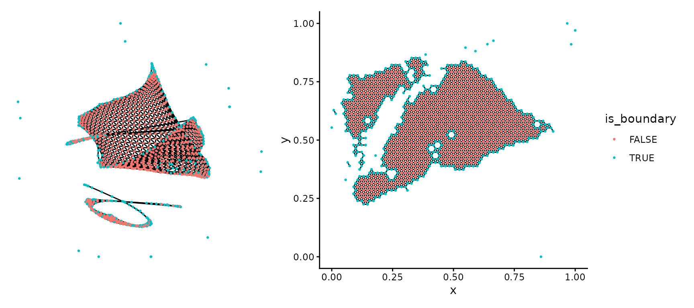
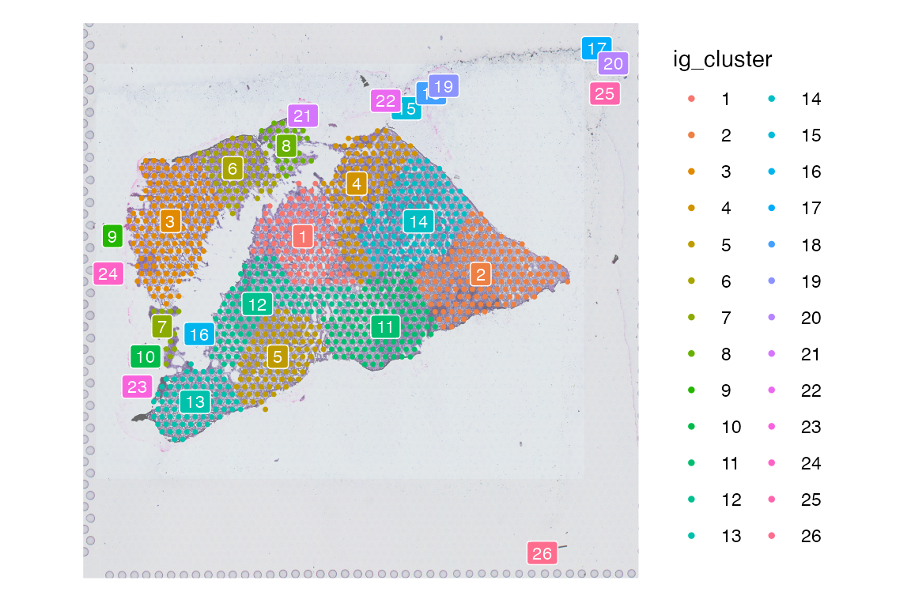
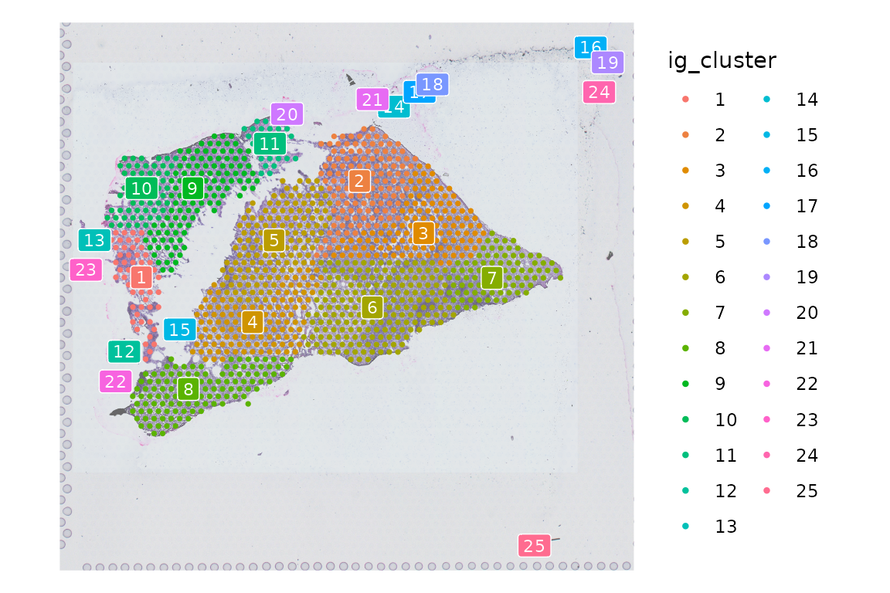
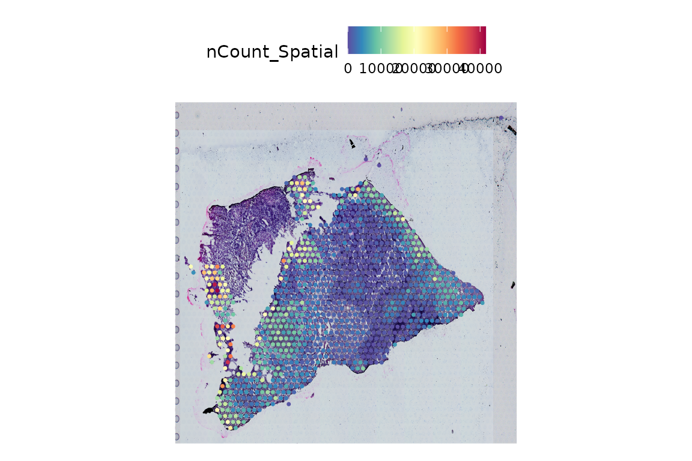
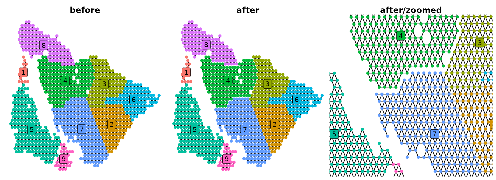

SpotGraphs
SpotGraphs.Rmd
library(SpotGraphs)
library(TENxVisiumData)
library(dplyr)
library(ggplot2)
library(viridis)
library(ggnetwork)Load example dataset
To demonstrate the general usage of SpotGraph, will use a 10X Visium dataset from a squamous cell carcinoma patient, downloaded from GSE208253. The raw data from GEO is provided as a Seurat object in this package to use as an example.
Create an igraph object
Our goal with this package is support Visium analysis by providing a function that constructs an igraph object based on the number of immediately adjacent spots on a slide. This opens up the analysis pipeline to various igraph functions to perform certain tasks such as:
- identifying spots lying on tissue debris to be removed from downstream analysis
- distance calculations between spots by measuring the shortest path through the network between each spot
- easily identifying edges of pre-defined regions of tissue
To construct an igraph object, all we need are the x,y coordinates of the spots on our slide.
coord = Seurat::GetTissueCoordinates(scc_s1)
coord = coord[,c('x', 'y')]
head(coord)
#> x y
#> AAACACCAATAACTGC-1 16571 4809
#> AAACAGGGTCTATATT-1 13546 3944
#> AAACCGTTCGTCCAGG-1 14812 8142
#> AAACGAGACGGTTGAT-1 10536 13505
#> AAACTGCTGGCTCCAA-1 13053 11764
#> AAAGACTGGGCGCTTT-1 9011 4240
ig = SpotGraph(coord = coord)
ig
#> IGRAPH 36393e5 UNW- 1185 3189 --
#> + attr: name (v/c), coord_x (v/n), coord_y (v/n), is_boundary (v/l),
#> | weight (e/n)
#> + edges from 36393e5 (vertex names):
#> [1] AAACACCAATAACTGC-1--AGGCGGTTTGTCCCGC-1
#> [2] AAACACCAATAACTGC-1--CTCGTCGAGGGCTCAT-1
#> [3] AAACACCAATAACTGC-1--GAAACATAGGAAACAG-1
#> [4] AAACACCAATAACTGC-1--GGAACCTTGACTCTGC-1
#> [5] AAACACCAATAACTGC-1--TCCCTGGCGTATTAAC-1
#> [6] AAACACCAATAACTGC-1--TGGACGCAATCCAGCC-1
#> [7] AAACAGGGTCTATATT-1--ACAGTAATACAACTTG-1
#> + ... omitted several edgesWe can plot this igraph object with the ggnetwork package, which
interfaces directly with ggplot2, or use the SpatialPlotGraph function
provided in this package to visualize the edges drawn between each node
in the original x,y coordinates stored in the igraph object. Note that
the is_boundary attribute is automatically calculated from
running SpotGraph(), which we will use to color each node
in our plots.
plt.ggnet = ggplot(ig, aes(x=x, y=y, xend=xend, yend=yend)) +
geom_edges() +
geom_nodes(aes(color = is_boundary), size = 0.5) +
theme_void() +
theme(legend.position = 'none')
plt.spg = SpatialPlotGraph(igraph_object = ig,
group.by = 'is_boundary',
flip.axes = T,
pt.size = 0.5)
patchwork::wrap_plots(plt.ggnet, plt.spg)
Spot filtering
One of the main features of the SpotGraph package is to identify
spots on a slide that lie on top of tissue debris disconnected from the
rest of the tissue sample. These are uninformative and are a technical
artifact from sample processing, so we’d like to exclude these from our
downstream analysis. The CleanSlide() function provides a
simple way to automatically identify these spots, based on connectivity
to other spots and the number of transcripts detected within each
community of spots.
First, we extract the two inputs required for the
CleanSlide() function:
- the x,y coordinates of each spot in our dataset
- a vector of transcript counts detected in each spot
coord = Seurat::GetTissueCoordinates(scc_s1)
coord = coord[,c('x', 'y')]
nCounts = scc_s1$nCount_SpatialThe output of CleanSlide() is a data.frame with the same
number of rows as the input coordinate data.frame or matrix that can be
directly used with Seurat::AddMetaData() to re-insert back
into the original Seurat object.
res = CleanSlide(coord, nCount = nCounts)
scc_s1 = Seurat::AddMetaData(scc_s1, res)We can now observe the results of CleanSlide() with
Seurat::SpatialDimPlot()
Seurat::SpatialDimPlot(scc_s1, group.by = 'threshold', image.alpha = 0.6)
We can agree with these results and directly apply the threshold to
filter out these spots with subset(scc_s1, threshold), or
we can manually identify groups of spots that we want to filter out. The
‘ig_cluster’ metadata column stores communities of spots, where each
spot is immediately adjacent to other spots.
Seurat::SpatialDimPlot(scc_s1, group.by = 'ig_cluster', image.alpha = 0.6, label = T, label.size = 3)
In this case, we could manually remove clusters 9, 10, 23, 24, 26, 22, 15, 18, 19, 17, 20, and 25.
spot_clusters_to_remove = c(9, 10, 23, 24, 26, 22, 15, 18, 19, 17, 20, 25)
scc_s1 = scc_s1[, !scc_s1$ig_cluster %in% spot_clusters_to_remove]
Seurat::SpatialFeaturePlot(scc_s1, features = 'nCount_Spatial', pt.size.factor = 2)
CutEdges
When working with an igraph object, it may be desirable to remove all edges between two groups of spots.
# Create igraph object
coord = Seurat::GetTissueCoordinates(scc_s1)
coord = coord[,c('x', 'y')]
ig = SpotGraph(coord)
# Clustering with igraph
igraph::V(ig)$clusters = factor(igraph::cluster_fast_greedy(ig)$membership)
plt1 = SpatialPlotGraph(ig, group.by = 'clusters', label = T) +
ggtitle('before') +
theme_void() +
theme(plot.title = element_text(hjust = 0.5, face = 'bold'),
legend.position = 'none')
# Remove edges between pairs of clusters
ig = CutEdges(ig, cluster_pairs = list(c(2,1), c(2,10)), cluster.col = 'clusters')
plt2 = SpatialPlotGraph(ig, group.by = 'clusters', label = T) +
ggtitle('after') +
theme_void() +
theme(plot.title = element_text(hjust = 0.5, face = 'bold'),
legend.position = 'none')
plt3 = plt2 +
coord_cartesian(xlim = c(0.35,0.8), ylim = c(0.4, 1)) +
ggtitle('after/zoomed')
patchwork::wrap_plots(plt1, plt2, plt3)